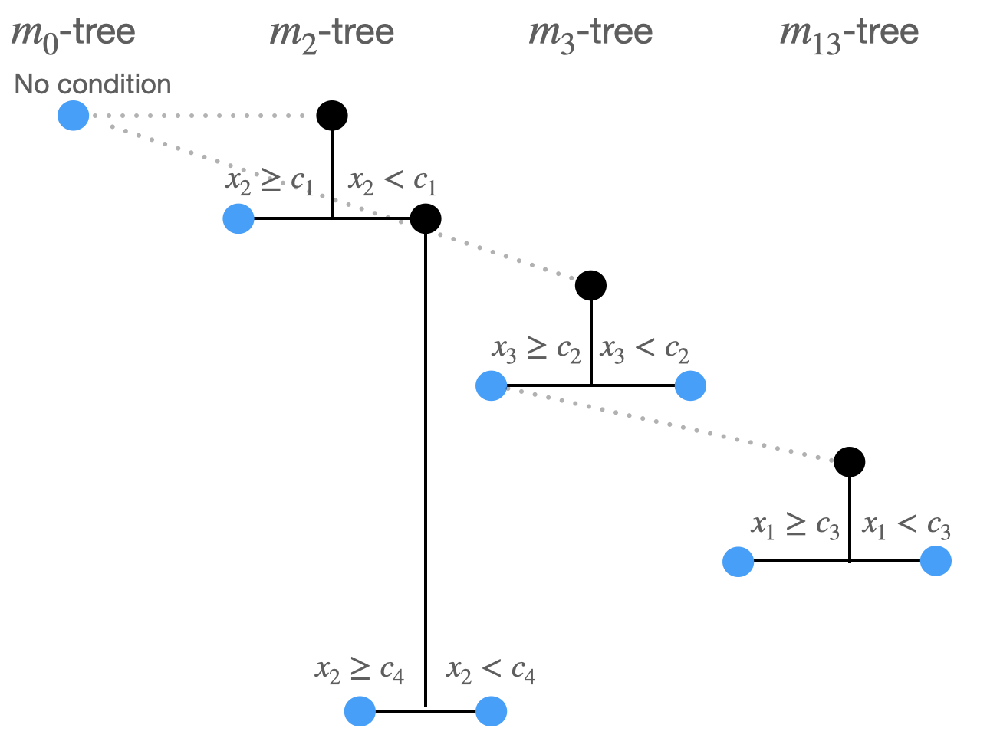
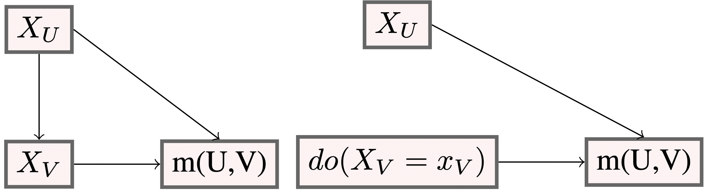

Planted Machine Learning
Letting accuracy and interpretability go hand in hand
Munir Hiabu
Motivation \(\cdots\) Random Planted forest \(\cdots\) Interpretability
Accuracy vs Interpretability
General Conception

Conjecture: Interpretability can boost accuracy 
1 The curse of dimensionality
The curse of dimensionality an example
We first generate 100 observations of the \(x_1\) variable which is uniformly distributed on [0,10].
A total of 37 observations are within a distance of 2 units from the middle point 5
We generate \(x_2\) independent of \(x_1\) and uniformly distributed on \([0,10]\).
We find 13 observations within a distance of 2 units from the middle point (5,5).
The \(x_3\) variable is independent of \((x_1,x_2)\) and uniformly distributed on \([0,10]\).
Only a total of 5 observation(s) fall within a distance of 2 units from the middle point (5,5,5).
The curse of dimensionality \(\cdots\) Random Planted forest \(\cdots\) Interpretability
The curse of dimensionality Implication
- Prediction: A new observation \(x_0\) will have very few or no observations in its neighborhood
- This leads to high variance
- and high bias when increasing the size of the neighborhood
- The setting \(n=50, d=1\) has the same expected amount of observations in a neighbourhood as the setting \(n=7.5\times10^{110}, d=100\).
(n= sample size, d=dimension)
The curse of dimensionality \(\cdots\) Random Planted forest \(\cdots\) Interpretability
The curse of dimensionality Solutions
There are two ways to tackle the curse of dimensionality
1. Sparsity
Assume that the intrinsic dimension is lower
- E.g. Not all variables are relevant
- Or feature engineer a few highly predictive variables
2. Structure
Interactions are limited and structure can be exploited
- e.g. an additive structure \(m(x)=m_1(x_1)+m_2(x_2)\).
The curse of dimensionality \(\cdots\) Random Planted forest \(\cdots\) Interpretability
The curse of dimensionality Solutions
There are two ways to tackle the curse of dimensionality
1. Sparsity
Assume that the intrinsic dimension is lower
- E.g. Not all variables are relevant
- Or feature engineer a few highly predictive variables
2. Structure
Interactions are limited and structure can be exploited
- e.g. an additive structure \(m(x)=m_1(x_1)+m_2(x_2)\).

Interpretability
Structure is also essential for interpretability but current machine learning algorithms for tabular data do not make use of structure.
The curse of dimensionality \(\cdots\) Random Planted forest \(\cdots\) Interpretability
The curse of dimensionality & Interpretability
- Regression: \(Y_i=m(X_i)+\varepsilon_i\)
- For now: Interpretability is understanding the relationship between \(X\) and \(\widehat m (X)\)
| GLM | Machine Learning1 | |
|---|---|---|
| interpretable | ||
| interactions | ||
| variable selection/sparsity | ||
| non-linearity |
Current machine learning algorithms are often highly flexible and can deal with interaction, sparsity and variable selection; but they are not interpretable .
GLMs are interpretable but lack flexibility. They also can not deal automatically with interactions, sparsity and variable selection.
The curse of dimensionality \(\cdots\) Random Planted forest \(\cdots\) Interpretability
2 Random Planted Forest
Random Planted Forest
This is joint work with
-
Joseph Meyer
Heidelberg University -
Enno Mammen
Heidelberg University
Preprint is available on https://arxiv.org/abs/2012.14563
Random Planted Forest Motivation
Assume a data set with \(d\) features. Also assume that we can approximate the regression function \(m\) by a (q-th) order functional decomposition:
\[m(x) \approx m_0+\sum_{k=1}^d m_k(x_{k}) + \sum_{k_1<k_2} m_{k_1k_2}(x_{k_1},x_{k_2}) + \cdots +\sum_{k_1<\cdots <k_q} m_{k_1,\dots,k_q} (x_{k_1},\dots,x_{k_q}).\]
- Optimal rates of convergence under the assumption that \(m\) has two continuous partial derivatives:
| Model general | general \(d\) | \(d = 6\) | Comparable sample sizes for \(d=6\) |
|---|---|---|---|
| Full model | \(O_p(n^{-2/(d+4)})\) | \(O_p(n^{-1/5})\) | 1 000 000 |
| Interaction (q) | \(O_p(n^{-2/(q+4)})\) | \(O_p(n^{-2/(q+4)})\) | 1 000 1 000 000 |
| Interaction (2) | \(O_p(n^{-1/3})\) | \(O_p(n^{-1/3})\) | 4 000 |
| Additive | \(O_p(n^{-2/5})\) | \(O_p(n^{-2/5})\) | 1 000 |
The curse of dimensionality \(\cdots\) Random Planted forest \(\cdots\) Interpretability
Random Planted Forest Main Idea
- Start with a fixed structure and become more complex in a data driven way along a pre-specified path
\[m(x)=m_0+\sum_{k=1}^d m_k(x_{k}) + \sum_{k<l} m_{kl}(x_{k},x_{l}) + \sum_{j<k<l} m_{jkl}(x_{j},x_{k},x_{l})+ \cdots.\]
- We aim to estimate the components \(m_k, m_{kl}, \dots\) simultaneously
- This is different to Lou et al. (2013) and related literature that first specify the components and then estimate them iteratively.
How:
- Replace tree in classical random forest by a family of trees that grow simultaneously.
- Each tree corresponds to a component in the ANOVA decomposition.
- first order approximation \(\rightarrow\) additive model.
- second order approximation \(\rightarrow\) fitting main term and pairwise interactions.
- order of approximation = number of covariates \(\Rightarrow\) no restriction on functional form
The curse of dimensionality \(\cdots\) Random Planted forest \(\cdots\) Interpretability
Random Planted Forest The algorithm
Setting: \(dim\)=3, \(t_{try}\)=0.6, \(split_{try}\)=5, \(n_{splits}\)=10
Split 1:
3 possible combinations:
- \(m_0 \rightarrow m_1: x_1\)
- \(m_0\rightarrow m_2: x_2\)
- \(m_0\rightarrow m_3: x_3\)
\(t_{try}:\) \(0.6\times3=1.8 \rightarrow\) 2 viable combinations randomly picked, say:
- \(m_0 \rightarrow m_1: x_1\),
- \(m_0\rightarrow m_2: x_2\)
\(split_{try}:\)For each viable split option we consider 5 randomly picked split points \(\rightarrow\) \(2\times5=10\) split options.
Compare the 10 split options: \(\sum_i (\widehat m(X_i) -Y_i)^2\)
\((m_2tree\rightarrow x_2,c_1)\) produces minimal least squares loss.
The curse of dimensionality \(\cdots\) Random Planted forest \(\cdots\) Interpretability
Random Planted Forest The algorithm
Setting: \(dim\)=3, \(t_{try}\)=0.6, \(split_{try}\)=5, \(n_{splits}\)=10
Split 1:
3 possible combinations:
- \(m_0 \rightarrow m_1: x_1\)
- \(m_0\rightarrow m_2: x_2\)
- \(m_0\rightarrow m_3: x_3\)
\(t_{try}:\) \(0.6\times3=1.8 \rightarrow\) 2 viable combinations randomly picked, say:
- \(m_0 \rightarrow m_1: x_1\),
- \(m_0\rightarrow m_2: x_2\)
\(split_{try}:\)For each viable split option we consider 5 randomly picked split points \(\rightarrow\) \(2\times5=10\) split options.
Compare the 10 split options: \(\sum_i (\widehat m(X_i) -Y_i)^2\)
\((m_2tree\rightarrow x_2,c_1)\) produces minimal least squares loss.
The curse of dimensionality \(\cdots\) Random Planted forest \(\cdots\) Interpretability
Random Planted Forest The algorithm
Setting: \(dim\)=3, \(t_{try}\)=0.6, \(split_{try}\)=5, \(n_{splits}\)=10
Split 2:
Now: 5 possible split combinations:
- \(m_0 \rightarrow m_1: x_1\)
- \(m_0 \rightarrow m_3: x_3\)
- \(m_2\rightarrow m_{12}: x_1\)
- \(m_2\rightarrow m_{13}: x_3\)
- \(m_2: x_2\)
Viable split combinations: \(5\times0.6=3\) > 3 options randomly picked, say
- \(m_0\rightarrow m_1: x_1\)
- \(m_2\rightarrow m_{23}: x_3\)
- \(m_0 \rightarrow m_3: x_3\)
Hence \(5\)\(\times(1+2+1)=20\) split options.
\((m_0 \rightarrow m_3: x_3,c_2)\) produces minimal least squares loss.
The curse of dimensionality \(\cdots\) Random Planted forest \(\cdots\) Interpretability
Random Planted Forest The algorithm
Setting: \(dim\)=3, \(t_{try}\)=0.6, \(split_{try}\)=5, \(n_{splits}\)=10
Split 2:
Now: 5 possible split combinations:
- \(m_0 \rightarrow m_1: x_1\)
- \(m_0 \rightarrow m_3: x_3\)
- \(m_2\rightarrow m_{12}: x_1\)
- \(m_2\rightarrow m_{13}: x_3\)
- \(m_2: x_2\)
Viable split combinations: \(5\times0.6=3\) > 3 options randomly picked, say
- \(m_0\rightarrow m_1: x_1\)
- \(m_2\rightarrow m_{23}: x_3\)
- \(m_0 \rightarrow m_3: x_3\)
Hence \(5\)\(\times(1+2+1)=20\) split options.
\((m_0 \rightarrow m_3: x_3,c_2)\) produces minimal least squares loss.
The curse of dimensionality \(\cdots\) Random Planted forest \(\cdots\) Interpretability
Random Planted Forest The algorithm
Setting: \(dim\)=3, \(t_{try}\)=0.6, \(split_{try}\)=5, \(n_{splits}\)=10
Split 3:
- Now: 7 possible split combinations:
- \(m_0 \rightarrow m_1: x_1\)
- \(m_2 \rightarrow m_{12}: x_1\)
- \(m_2 \rightarrow m_{13}: x_3\)
- \(m_2 \rightarrow x_2\)
- \(m_3 \rightarrow m_{13}: x_1\)
- \(m_3 \rightarrow m_{23}: x_2\)
- \(m_3 \rightarrow x_3\)
- \((m_3 \rightarrow m_{13}: x_1,c_3)\) produces minimal least squares loss.
The curse of dimensionality \(\cdots\) Random Planted forest \(\cdots\) Interpretability
Random Planted Forest The algorithm
Setting: \(dim\)=3, \(t_{try}\)=0.6, \(split_{try}\)=5, \(n_{splits}\)=10
Split 3:
- Now: 7 possible split combinations:
- \(m_0 \rightarrow m_1: x_1\)
- \(m_2 \rightarrow m_{12}: x_1\)
- \(m_2 \rightarrow m_{13}: x_3\)
- \(m_2 \rightarrow x_2\)
- \(m_3 \rightarrow m_{13}: x_1\)
- \(m_3 \rightarrow m_{23}: x_2\)
- \(m_3 \rightarrow x_3\)
- \((m_3 \rightarrow m_{13}: x_1,c_3)\) produces minimal least squares loss.
The curse of dimensionality \(\cdots\) Random Planted forest \(\cdots\) Interpretability
Random Planted Forest The algorithm
Setting: \(dim\)=3, \(t_{try}\)=0.6, \(split_{try}\)=5, \(n_{splits}\)=10

Split 4:
- \((m_2 \rightarrow m_{2}: x_2,c_4)\) produces minimal least squares loss.
The curse of dimensionality \(\cdots\) Random Planted forest \(\cdots\) Interpretability
Random Planted Forest Accuracy: Simulation
- We will evaluate how Random Planted forest deals with combinations of interactions, variable selection/sparsity, non-linearity/jumps
Regression setting (In all simulations):
\(Y_i=m(x_i)+\varepsilon_i, \quad i=1,\dots,500, x_i\in \mathbb R^{\textrm{dim}}\)
- \(\textrm{dim}=30\)
- \(Corr(X_j,X_k)\approx 0.3, \ j\neq k\)
- \(\varepsilon_i\sim N(0,1), iid\)
Comparison between
- Random Planted Forest
- XGboost a gradient boosting variant
- gam via mgcv package (= GLM with smoothing splines)
The curse of dimensionality \(\cdots\) Random Planted forest \(\cdots\) Interpretability
Random Planted Forest Accuracy: Simulation
Regression setting:
\(Y_i=m(x_i)+\varepsilon_i, \quad i=1,\dots,500, x_i\in \mathbb R^{\textrm{dim}}\)
- \(\textrm{dim}=30\)
- \(Corr(X_j,X_k)\approx 0.3, \ j\neq k\)
- \(\varepsilon_i\sim N(0,1), iid\)
First setting:Additive, Sparse (2/30 features), Non-linear (sin-curve)
- \(m(x)=m_1(x_1)+m_2(x_2)+\cdots+ m_{30}(x_{30})\)
- \(m_1(x_1)=-2\sin(\pi x_1), \ m_2(x_2)=2\sin(\pi x_2)\)
- \(m_3(x_3)=m_4(x_4)=\cdots=m_{30}(x_{30})=0\)
The curse of dimensionality \(\cdots\) Random Planted forest \(\cdots\) Interpretability
Random Planted Forest Accuracy: Simulation
Additive, Sparse (2/30 features), Non-linear (sin-curve)
True function: black solid line
Grey lines: 40 Monte Carlo simulations
xgboost (additive=depth=1)
planted forest (additive= max interaction=1)
Simulations are run with optimal parameters
The curse of dimensionality \(\cdots\) Random Planted forest \(\cdots\) Interpretability
Random Planted Forest Accuracy: Simulation
Regression setting:
\(Y_i=m(x_i)+\varepsilon_i, \quad i=1,\dots,500, x_i\in \mathbb R^{\textrm{dim}}\)
- \(\textrm{dim}=30\)
- \(Corr(X_j,X_k)\approx 0.3, \ j\neq k\)
- \(\varepsilon_i\sim N(0,1), iid\)
Second setting:Additive, Sparse (2/30 features), jump
The curse of dimensionality \(\cdots\) Random Planted forest \(\cdots\) Interpretability
Random Planted Forest Accuracy: Simulation
Regression setting:
\(Y_i=m(x_i)+\varepsilon_i, \quad i=1,\dots,500, x_i\in \mathbb R^{\textrm{dim}}\)
- \(\textrm{dim}=30\)
- \(Corr(X_j,X_k)\approx 0.3, \ j\neq k\)
- \(\varepsilon_i\sim N(0,1), iid\)
Third setting:\(\textbf{pair-wise interaction}\), Sparse (2/30 features), smooth
- Estimating \(m_{12}(x_{1},x_2)\)
- We do not consider gam anymore-
- Heatmaps show median performing estimators out of 40 Monte Carlo simulations
The curse of dimensionality \(\cdots\) Random Planted forest \(\cdots\) Interpretability
Random Planted Forest Accuracy: Simulation
sparse+smooth+additive. Table shows Mean Squared Error (Standard deviation)
| Method | Assumption | dim=4 | dim=10 | dim=30 |
|---|---|---|---|---|
| xgboost | additive | 0.119 (0.021) | 0.142 (0.021) | 0.176 (0.027) |
| xgboost | - | 0.141 (0.024) | 0.166 (0.028) | 0.193 (0.033) |
| xgboost-CV | - | 0.139 (0.028) | 0.152 (0.029) | 0.194 (0.035) |
| rpf | additive | 0.087 (0.018) | 0.086 (0.017) | 0.097 (0.019) |
| rpf | interaction(2) | 0.107 (0.015) | 0.121 (0.025) | 0.142 (0.026) |
| rpf | - | 0.112 (0.017) | 0.134 (0.026) | 0.162 (0.028) |
| rpf-CV | - | 0.103 (0.02) | 0.102 (0.035) | 0.105 (0.022) |
| rf | - | 0.209 (0.021) | 0.252 (0.027) | 0.3 (0.029) |
| sbf | additive+smooth | 0.071 (0.026) | 0.134 (0.013) | 0.388 (0.073) |
| gam | additive+smooth | 0.033 (0.012) | 0.035 (0.013) | 0.058 (0.021) |
| BART | - | 0.085 (0.019) | 0.076 (0.017) | 0.091 (0.023) |
| BART-CV | - | 0.09 (0.019) | 0.081 (0.014) | 0.09 (0.02) |
| MARS | smooth | 0.054 (0.014) | 0.061 (0.025) | 0.076 (0.031) |
| 1-NN | no noise | 1.509 (0.1) | 3.228 (0.182) | 5.534 (0.313) |
| average | no covariates | 3.811 (0.217) | 3.689 (0.183) | 3.748 (0.202) |
Random Planted Forest Accuracy: Simulation
sparse+jump+additive. Table shows Mean Squared Error (Standard deviation)
| Method | Assumption | dim=4 | dim=10 | dim=30 |
|---|---|---|---|---|
| xgboost | additive | 0.19 (0.029) | 0.282 (0.044) | 0.401 (0.045) |
| xgboost | - | 0.198 (0.031) | 0.265 (0.053) | 0.286 (0.034) |
| xgboost-CV | - | 0.209 (0.028) | 0.281 (0.052) | 0.313 (0.058) |
| rpf | additive | 0.159 (0.033) | 0.198 (0.075) | 0.179 (0.041) |
| rpf | interaction(2) | 0.185 (0.028) | 0.24 (0.066) | 0.259 (0.043) |
| rpf | - | 0.192 (0.026) | 0.251 (0.065) | 0.282 (0.043) |
| rpf-CV | - | 0.169 (0.033) | 0.207 (0.072) | 0.183 (0.042) |
| rf | - | 0.274 (0.035) | 0.322 (0.05) | 0.375 (0.037) |
| sbf | additive+smooth | 0.342 (0.049) | 0.603 (0.053) | 1.112 (0.138) |
| gam | additive+smooth | 0.41 (0.047) | 0.406 (0.027) | 0.431 (0.06) |
| BART | - | 0.177 (0.047) | 0.162 (0.038) | 0.157 (0.034) |
| BART-CV | - | 0.179 (0.051) | 0.163 (0.041) | 0.159 (0.036) |
| MARS | smooth | 0.751 (0.136) | 0.74 (0.104) | 0.687 (0.123) |
| 1-NN | no noise | 2.393 (0.229) | 3.029 (0.308) | 3.512 (0.333) |
| average | no covariates | 1.276 (0.075) | 1.25 (0.063) | 1.213 (0.054) |
Random Planted Forest Accuracy: Simulation
sparse+smooth+hierarchical interaction. Table shows Mean Squared Error (Standard deviation)
| Method | Assumption | dim=4 | dim=10 | dim=30 |
|---|---|---|---|---|
| xgboost | - | 0.374 (0.035) | 0.481 (0.064) | 0.557 (0.089) |
| xgboost-CV | - | 0.393 (0.051) | 0.499 (0.058) | 0.563 (0.089) |
| rpf | interaction(2) | 0.248 (0.038) | 0.327 (0.045) | 0.408 (0.07) |
| rpf | - | 0.263 (0.034) | 0.357 (0.044) | 0.452 (0.076) |
| rpf-CV | - | 0.277 (0.039) | 0.366 (0.051) | 0.463 (0.083) |
| rf | - | 0.432 (0.039) | 0.575 (0.061) | 0.671 (0.08) |
| BART | - | 0.214 (0.03) | 0.223 (0.04) | 0.252 (0.037) |
| BART-CV | - | 0.242 (0.043) | 0.276 (0.053) | 0.315 (0.047) |
| MARS | smooth | 0.355 (0.089) | 0.282 (0.038) | 0.414 (0.126) |
| 1-NN | no noise | 2.068 (0.156) | 5.988 (0.624) | 11.059 (0.676) |
| average | no covariates | 8.366 (0.43) | 8.086 (0.246) | 8.207 (0.496) |
The curse of dimensionality \(\cdots\) Random Planted forest \(\cdots\) Interpretability
Random Planted Forest Accuracy: Simulation
sparse+smooth+pure interaction. Table shows Mean Squared Error (Standard deviation)
| Method | Assumption | dim=4 | dim=10 | dim=30 |
|---|---|---|---|---|
| xgboost | - | 0.417 (0.082) | 0.797 (0.16) | 1.381 (0.234) |
| xgboost-CV | - | 0.443 (0.078) | 0.872 (0.136) | |
| rpf | interaction(2) | 0.416 (0.082) | 1.289 (0.224) | |
| rpf | - | 0.219 (0.035) | 0.556 (0.143) | |
| rpf-CV | - | 0.233 (0.033) | 0.603 (0.163) | |
| rf | - | 0.304 (0.047) | 0.744 (0.305) | |
| BART | - | 0.168 (0.022) | 0.172 (0.032) | |
| BART-CV | - | 0.192 (0.03) | 0.199 (0.039) | |
| MARS | smooth | 0.245 (0.088) | 0.831 (0.728) | |
| 1-NN | no noise | 1.323 (0.117) | 2.642 (0.317) | |
| average | no covariates | 2.187 (0.125) | 2.226 (0.174) |
The curse of dimensionality \(\cdots\) Random Planted forest \(\cdots\) Interpretability
Generalized Random Planted Forest
This is joint work with
-
Joseph Meyer
Heidelberg University -
Enno Mammen
Heidelberg University -

Lukas Burk
The Leibniz Institute for Prevention
Research and Epidemiology - BIP -

Marvin Wright
The Leibniz Institute for Prevention
Research and Epidemiology - BIP
Code is available on https://github.com/PlantedML/randomPlantedForest
Random Planted Forest Accuracy: Benchmark-data
The curse of dimensionality \(\cdots\) Random Planted forest \(\cdots\) Interpretability
3 Interpretability
Interpretability
This is joint work with
-
Joseph Meyer
Heidelberg University -
Marvin Wright
The Leibniz Institute for Prevention
Research and Epidemiology - BIP
Preprint is available on https://arxiv.org/abs/2208.06151
Code is available on https://github.com/PlantedML/glex
Interpretability Some notes
What is interpretability?
A Random Planted Forest with max-interaction=2 is interpretable in the sense the we can plot the one and two dimensional components.
Random Planted Forest is not (yet) interpretable in a strong sense: What is the meaning of the components.
- Do the components have a causal meaning?
- What about correlations and interactions?
- See also Lipton (2018), for some thoughts on this.
First: The components \(m_0, m_k(x_{k}), m_{k_1k_2}(x_{k_1},x_{k_2}), \dots\) are not yet identified
The curse of dimensionality \(\cdots\) Random Planted forest \(\cdots\) Interpretability
Interpretability Identifiability
Two possibilities are
- [Generalized ANOVA] For every \(S\subseteq \{1,\dots,d\}\)
and \(k\in u\), \[\int m_{S}\left(x_{S}\right) \int w(x) \mathrm dx_{-S} \ \mathrm d x_{k}=0\] - For every \(S\subseteq \{1,\dots,d\}\) \[\sum_{T: T \cap S \neq \emptyset} \int m_T(x_T) \int w(x) \mathrm dx_{-S}\mathrm dx_S=0\]
Common choices for \(w\) are
- \(w \equiv 1\)
- \(w(x)=p(x),\ \) \(p=\) density of \(X\).
- \(w(x)=\prod p_j(x_j),\ \) \(p_j=\) density of \(X_j\).
The curse of dimensionality \(\cdots\) Random Planted forest \(\cdots\) Interpretability
Interpretability Identifiability
Two possibilities are
- [Generalized ANOVA] For every \(S\subseteq \{1,\dots,d\}\)
and \(k\in u\), \[\int m_{S}\left(x_{S}\right) \int w(x) \mathrm dx_{-S} \ \mathrm d x_{k}=0\] - For every \(S\subseteq \{1,\dots,d\}\) \[\sum_{T: T \cap S \neq \emptyset} \int m_T(x_T) \int w(x) \mathrm dx_{-S}\mathrm dx_S=0\]
Common choices for \(w\) are
- \(w \equiv 1\)
- \(w(x)=p(x),\ \) \(p=\) density of \(X\).
- \(w(x)=\prod p_j(x_j),\ \) \(p_j=\) density of \(X_j\).
The curse of dimensionality \(\cdots\) Random Planted forest \(\cdots\) Interpretability
Interpretability Marginal Identification
For the rest of this talk we will consider the marginal identification
Marginal Identification
For every \(S\subseteq \{1,\dots,d\}\) \[\sum_{T: T \cap S \neq \emptyset} \int m_T(x_T) p_{S}(x_{S}) \mathrm dx_S=0\]
Theorem
Given any initial estimator \(\hat m^{(0)}=\{\hat m^{(0)}_S | S\subseteq \{1,\dots,d\}\}\), there exists exactly one set of functions \(\hat m^\ast=\{\hat m^\ast_S | S\subseteq \{1,\dots,d\}\}\) satisfying the marginal constraint with \(\sum_S \hat m^\ast_S = \sum_S \hat m^{(0)}_S\). The functions are given by \[ \hat m^\ast_S (x_S)= \sum_{T \supseteq S} \sum_{T\setminus S \subseteq U\subseteq T}(-1)^{|S|-|T\setminus U|} \times \int \hat m^{(0)}_T(x_T) \hat p_U(x_U)\mathrm dx_U. \notag \] In particular \(\hat m^\ast\) does not depend on the particular identification of \(\hat m^{(0)}\).
The curse of dimensionality \(\cdots\) Random Planted forest \(\cdots\) Interpretability
Interpretability Marginal Identification
The are three reasons why the marginal identification is particularly interesting
- Partial Dependence Plots
- SHAP values
- Fairness
The curse of dimensionality \(\cdots\) Random Planted forest \(\cdots\) Interpretability
Interpretability Marginal Identification: Partial Dependence Plots
A partial dependence plot, \(\xi_S\), is defined as \[\xi_S(x_S)= \int \hat m(x) p_{-S}(x_{-S})\mathrm dx_{-S}.\]
Corollary
If \(\hat m^{\ast}\) satisfies the marginal identification, then \[\xi_S=\sum_{U \subseteq S} \hat m_U^{\ast}.\] In particular if \(S\) is only one feature, i.e., \(S=\{k\}\), we have \[\xi_k(x_k)= \hat m_0^{\ast} + \hat m_k^\ast(x_k).\]
The curse of dimensionality \(\cdots\) Random Planted forest \(\cdots\) Interpretability
Interpretability Marginal Identification: SHAP values
Theorem
- \(\hat m^{\ast}\) is decomposed with marginal identification satisfied
- then, interventional SHAP values are weighted averages components
- interaction component is equally split between involved features:
\[ \phi_k(x)= \hat m^{\ast}_k(x_k)+ \frac 1 2 \sum_j \hat m^{\ast}_{kj}(x_{kj}) + \cdots + \frac 1 d \hat m^{\ast}_{1,\dots,d}(x_{1,\dots,d}). \]
The curse of dimensionality \(\cdots\) Random Planted forest \(\cdots\) Interpretability
Interpretability Marginal Identification: SHAP values
Theorem
- \(\hat m^{\ast}\) is decomposed with marginal identification satisfied
- then, interventional SHAP values are weighted averages components
- interaction component is equally split between involved features:
\[ \phi_k(x)= \hat m^{\ast}_k(x_k)+ \frac 1 2 \sum_j \hat m^{\ast}_{kj}(x_{kj}) + \cdots + \frac 1 d \hat m^{\ast}_{1,\dots,d}(x_{1,\dots,d}). \]
Related Literature (appeared some weeks after our preprint)
- Bordt and Luxburg (2022) show that for every SHAP-value function there exists a one-to-one correspondence between SHAP values and an identification in a functional decomposition. But they do not provide explicit solutions.
- Herren and Hahn (2022) describe an identification constraint that connects to observational SHAP.
- We find an identification constraint that gives a one-to-one correspondence to interventional SHAP and provides a fast implementation for tree-based methods.
The curse of dimensionality \(\cdots\) Random Planted forest \(\cdots\) Interpretability
Interpretability Marginal Identification: fairness

Assume \(U\) is a set of protected features.
- For example \(U=\{\text{gender, ethnicity}\}\).
Let \(U \cup V=\{1,\dots, d\}, U\cap V=\emptyset\).
The do-operator, \(do(X_V=x_V)\), removes all edges going into \(X_V\), ensuring counterfactual fairness (Kusner et al. 2017), see also Lindholm et al. (2022)
\(E[m(X) |\ do(X_V=x_V))\) does not use information contained in \(X_U\); neither directly nor indirectly.
Under the assumed causal structure we have \[E[m(X) |\ do(X_V=x_V)]= \int m(x) p_U(x_U) dx_U.\]
Under marginal identifiaction: \[\int \hat m^\ast(x) \hat p_U(x_U) dx_U= \sum_{S: S\cap U =\emptyset}\int \hat m^\ast_S(x_S) \hat p_U(x_U) dx_U + \sum_{S: S\cap U \neq \emptyset}\int \hat m^\ast_S(x_S) \hat p_U(x_U) dx_U= \sum_{S \subseteq V} \hat m^\ast_S(x_S),\] i.e., a fair estimator can be extracted from \(\hat m\) by dropping all components that include features in \(U\).
The curse of dimensionality \(\cdots\) Random Planted forest \(\cdots\) Interpretability
Interpretability Marginal Identification:Summary
Summary(Marginal Identification)
If \(m\) is identified via the marginal identification, then
Interventional SHAP values: We have \[ \phi_k(x)= \hat m^{\ast}_k(x_k)+ \frac 1 2 \sum_j \hat m^{\ast}_{kj}(x_{kj}) + \cdots + \frac 1 d \hat m^{\ast}_{1,\dots,d}(x_{1,\dots,d}). \]
Partial dependence plots: We have \[\xi_k(x_k)= \hat m_0^{\ast} + \hat m_k^\ast(x_k).\]
Fairness: If \(S\) are protected variables and all components that contain a subset of \(S\) are dropped, we derive a fair estimator.
We have made available a fast implementation for extracting the marginal identification from xgboost on github: https://github.com/PlantedML/glex.
A version for Random Planted forest will be available soon.
Interpretability Marginal Identification:Simulation
We simulate 10,000 noisy observations from
\[m(x_1,x_2)=x_1+x_2+x_1x_2\] If \(X_1, X_2\) have each mean zero and variance one, then
- Marginal identification: \[ \begin{eqnarray} m_0&=&2corr(X_1,X_2) \\ m_1(x_1)&=& x_1 -2corr(X_1,X_2) \\ m_2(x_2)&=&x_2 - 2corr(X_1,X_2) \\ m_{12}(x_1,x_2)&=& 2x_1x_2 + 2corr(X_1,X_2). \end{eqnarray} \]

- Conclusion: It is not clear if a method that estimates \(m\) well is also a good estimator for a selection of components {\(m_S\)}.
- This discussion is related to work done in double/debiased machine learning Chernozhukov et al. (2018).
The curse of dimensionality \(\cdots\) Random Planted forest \(\cdots\) Interpretability
Possible Next Steps
- Package Implementation of randomPlantedForest:
- Main part: C++ with Python and R version
- R-version is already available on github
- Missing: Marginal identification, Plot functions
- Focussing on estimation quality of functional components and their interpretation
- Considering more general causal structures and problems
- Theory for modified Random Planted Forests
- Subsampling \(\rightarrow\) confidence intervals
- Replace functional decomposition by \(\sum_{l=1}^q \prod_{k=1}^d m_{lk}(x_k)\)
- Survival Random Planted Forest
- Applications, e.g., in non-life insurance
Thank You!